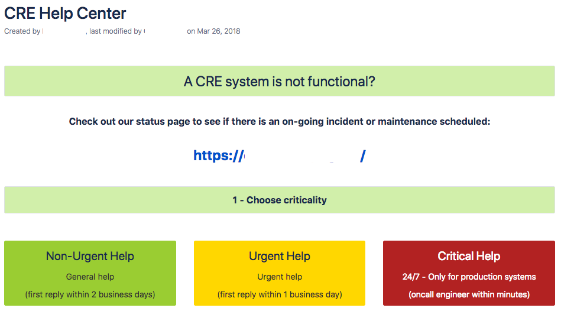

From zero to your first billion requests
Daniel Giribet
Director of Engineering at Schibsted
About me


The mission
Infrastructure and engineering productivity to deliver billions (of requests)
So our product and development teams build fantastic stuff on top
The challenge
Build a team of teams from zero to 100+ engineers
The most important takeaway
Builing the teams
Growing the teams
The most important takeaway
Build up on the fundamentals
But not this ones
What’s the O() cost of whatever?
What’s the quickest way to count all 1’s in a bit array?
How can a process leave the CPU?
<Insert your fav question here>
What about other fundamentals?
What’s the relationship between reason and emotion?
Why do most ecosystems have thriving opportunistic agents?
How do self-replicating ideas propagate?
Are unpredictable rewards more effective?
Do we trust people more if they ask us for help?
Read up on ‘other’ fundamentals


Building the teams
#1 Be prepared to interview
A lot
Think of less than 10% conversion rate
101
Number of interviews done in 2016
Close to one every two working days
#2 New teams need
top-down tasks
Forming a new team is hard work
Avoid the mistake of setting a blue sky project like ‘cluster management’
Set a specific short project instead, with clear value and impact
Team now mature? -> open up domain of work
#3 Do not forsake ancient wisdom
Don’t change your architecture while migrating environments ADD MORE
#4 Look for a balance between develop-centric and ops-centric
Excellence in operations alone is not enough
Nor is development expertise in isolation
Do you take into account security?
Growing the teams
Now you have (a) team(s)… what’s next?
- User focus
- Scalable knowledge
- Agile teamwork
- Engineering mentality
User focus
User focus is the root of all team value
How to drive it?
#1 Joint projects with product engineering teams
Earliest success comes from such projects
Initiative is usually hero-driven
Make those initiatives systematic
#2 Help center
Structured support
Make it really easy

#3 Identify stakeholders early in the game
A periodic ‘stakeholder’ meeting a good way to start
Not something for ‘product people’ only
Formal session with preparation, agenda, demos and outcomes
Indicators of success of stakeholder sessions
- Non-managers attending
- Team diversity
- It’s not always you speaking
- Complaints are voiced… politely
Scalable knowledge
Handholding is your enemy
Expand your engineers’ knowledge
Expand your teams’ knowledge
Expand your users’ knowledge
Can’t train everybody
Can’t meet everyone
Screencasts the most effective so far
Agile teamwork
Agility
+
Teamwork
Inside and outside teams
Key metric - development / operations ratio
Key metric - Dogfooding
Adopting your own projects is critical to success
Engineering Mentality
Solve problems with engineering solutions
Usually the alternative is “we need more people”